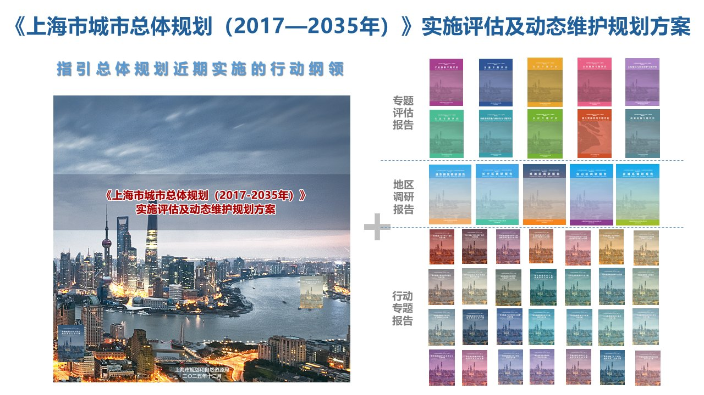
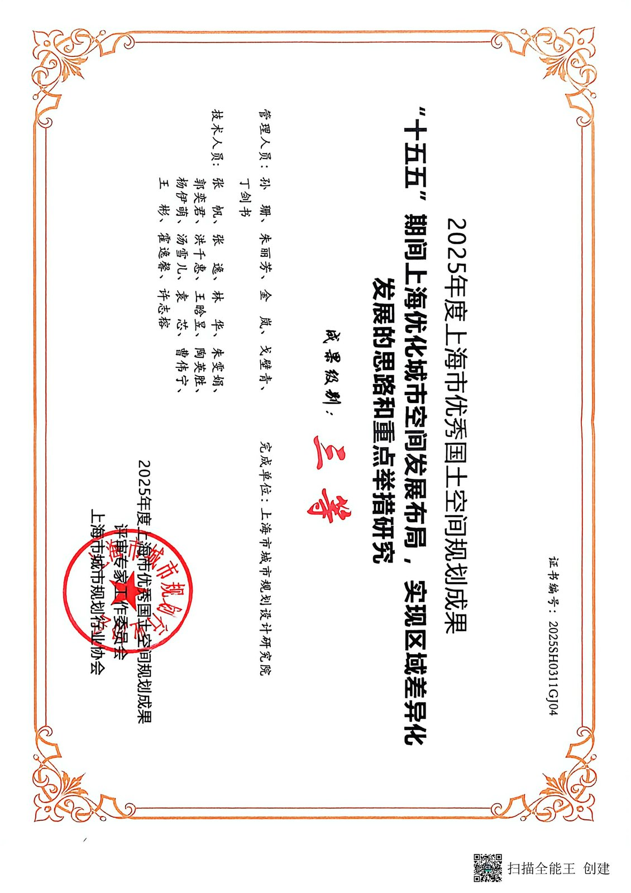
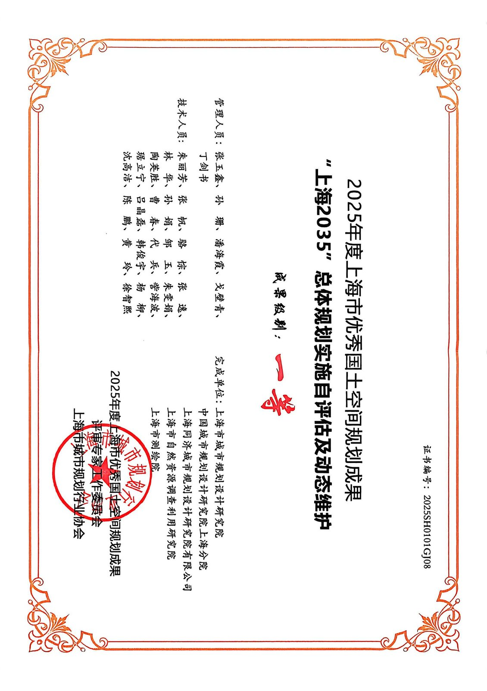

宏观视野 · 洞察上海
上海2035总规评估与动态维护
投身上海2035总规评估与动态维护方案、上海市国土空间近期实施规划编制，全程支撑报部、报奖相关工作，切实体会国家、上海市的发展蓝图如何转化为施工图、实景画。在常态化对接市级委办局、局机关各处室、院内各业务部门的协作过程中，不断校准规划工作者的定位，逐步建立起服务城市整体发展的宏观视野。


入职以来深度参与上海市重大规划编制与实施，形成"宏观视野—中微观设计—规划实施—跨域协同"的完整实践链条。

宏观视野 · 洞察上海
投身上海2035总规评估与动态维护方案、上海市国土空间近期实施规划编制，全程支撑报部、报奖相关工作，切实体会国家、上海市的发展蓝图如何转化为施工图、实景画。在常态化对接市级委办局、局机关各处室、院内各业务部门的协作过程中，不断校准规划工作者的定位，逐步建立起服务城市整体发展的宏观视野。


中微观 · 设计能力
在宏观之外兼具中微观尺度城市设计素养，深度参与环淀山湖世界级湖区战略规划、示范区水乡单元郊野单元控规编制、嘉定云翔控规调整等项目，打磨方案叙事逻辑与成果表达，积累法定规划实操经验。
（效果图 / 总平面图待补充）
纵向 · 规划实施
以市级土地储备专项规划为基础，下沉杨浦区土地储备专项规划开展实操，在遍历杨浦每一个储备地块的过程中，深化对"规储净供用维"一体化全链条运行逻辑的理解，打通规划编制到土地落地实施的认知壁垒。
横向 · 跨域协同
主动跳出规资条线固有边界，不断拓展"朋友圈"。参与与市绿容局联合编制的耕地保护和国土绿化空间专项规划，承接嘉定区青年发展友好型城市建设"十五五"规划编制，协助市发改委开展自贸试验区空间布局优化调整相关工作，在跨部门任务中理解多元主体诉求，丰富规划思考视角。
学术研究与实践思考的沉淀。
研究条目整理中，敬请期待 ——
（期刊论文 / 会议论文 / 课题 / 专利，按年份倒序呈现）
跨学科背景（城乡规划 + 信息工程）带来的复合技能组合。
技能熟练度待你确认后校准。
你好，我是汤雪儿，一名工作两年的城市规划设计师，现就职于上海市城市规划设计研究院。
我的实践横跨宏观战略规划、中微观城市设计与法定规划编制、土地储备实施与跨部门协同，致力于让规划真正落地、让空间回应人的需求。信息工程的本科背景让我对空间数据、逻辑与量化方法保持敏感，也让我在跨专业协作中多一分从容。
期待与志同道合的伙伴交流合作。